Precision-Aware Learning Rate Transfer Across Block Count in LLM Post-Training
Nan Chen、Soledad Villar 和 Soufiane Hayou 来自 Johns Hopkins University。论文研究大模型后训练中的学习率选择：只训练靠近输出的一小段块来找代理学习率，再把它迁移到更多训练块。工作属于 LLM 后训练，按 arXiv 2026 年 11 月 24 日公开公告收录，同日核验 v1。作者仓库页面可访问，本次阅读核验了原文，没有重跑作者训练。 论文原文 · TipSweep 作者仓库
预训练大模型的监督微调、偏好优化和可验证奖励强化学习都对学习率敏感。让每个候选学习率都更新完整模型，显存和计算都很昂贵；预训练检查点又已经确定模型宽度，难以直接借用从窄模型向宽模型迁移学习率的经验。
1. 背景和问题
从预训练模型开始后训练，工程团队首先面对的是候选配方的成本。每个候选学习率可能只有一个数值之差，但训练过程中它会改变每次权重写回，进而改变下一步的梯度、优化器矩和模型输出。用同一次完整训练的损失轨迹，无法反推出另一个学习率几千步后会到达什么参数位置。完整的网格搜索因此需要从同一检查点开出多条独立分支，并对每条分支执行前向、反向、更新、验证。建立一条有效基线之外的那些训练轮次就构成搜索成本。模型越大，若整套参数均可训练，梯度和优化器一阶、二阶矩都得按对应训练参数保存。短样本和小批也难以消除这一部分固定占用。候选数不变时，更深、更宽的模型直接放大每次试训练预算。
预训练的超参数迁移提供一种思路。在合适的参数化下，先在小宽度或小深度的模型上选超参数，再把数值迁移到目标尺寸。若训练从随机初始化开始，开发者通常可以同时改变尺寸和初始化配方。后训练则接手一个已经形成内部表征的检查点。切掉部分隐藏通道或移除预训练深层会改变层间残差的含义，也会改变输入到损失这条路径，代理模型可能失去目标模型的重要行为。TipSweep 保留模型结构和预训练参数，以允许更新的块数定义代理大小。冻结靠近输入的块后，它们仍需正常计算隐状态；代理末块之后仍接着原输出头。这种设置让候选学习率共享同一组输入特征，同时保留冻结前缀的原预测能力。因而狭义的代理差异集中在可训练范围，可以直接问深度变化是否要求对每一小步的有效更新重新定标。
“训练多少块”与“只使用多少层”对计算量的含义不同。一个深网络即使只更新最后一块，仍然要把标记序列经过所有前层才能取得合适的输入。反向传播省下的部分需要和冻结前缀前向、冻结输出头在求输入梯度时的反向同时计账。若每个候选都在一张卡上重新跑前缀，浅训练虽然降低显存，壁钟未必得到数量级收益。作者把冻结前缀的特征持久化，或让同批特征由多条代理分支共同读取，使候选数增长时只有末块与输出头等必要路径重复计算。这一层复用还涉及标签、样本切分和位置掩码。只有当多条候选需要的是同一输入和冻结前缀的同一执行版本，缓存才能支持公平对照。数据动态生成或前缀的参数、随机性随迭代改变时，同一份缓存不能直接汇集全部训练步。
第二个问题来自混合精度。很多训练系统会把前向、反向或通信描述为 BF16，却在 FP32 主副本中累积权重变动，再转成低精度副本执行下一次前向。另一种实现为省显存直接把参数保存在 BF16 中，优化器将更新后的值舍入回这种表示。BF16 指数范围较宽，能覆盖大部分正常参数尺度，但其尾数的分辨率比 FP32 粗。在某个权重附近，若按学习率缩小的更新没跨过相邻浮点格点的中点，写回的权重可能与原值完全一样。假设每次由独立 FP32 主副本积累，同样的小更新有机会在多步后累起来；直接写回的常规最近值舍入会先把它丢掉。精度因而决定增量的跨步保存方式，仅查看“是否用 BF16 算”无法选出对应的迁移规则。
这意味着把块数翻倍时，按同一比例减小所有步长可能同时产生两种效应。第一，单个未被舍入的参数移动量减小。第二，足够大、跨得过局部浮点间距的增量减少，真正发生移动的坐标比例进一步下降。后一层效应依赖权值量级、梯度方向和矩估计，甚至同一卡中靠近零的权重与绝对值大的权重都有不同阈值。块数增加带来的理想梯度贡献获得更多来源，但舍入改变了这些来源中落到真实权重的比例。文章以这种矛盾提出不同精度的两个迁移指数，并通过逐训练步剖析检查一阶近似、逐块贡献和实现因子。把数值写回纳入判断还能解释为什么一些含低秩适配器的配方尽管实际用 FP32 保存适配权重，却不沿着直接微调原参数的斜率走：乘积分解引入了另一种参数化，块贡献随学习率的关系需要重估。
后训练任务的不同也会改变所测对象。SFT 在固定参考答案上比较交叉熵，DPO 比较偏好对相对于参考策略的概率差，RLVR 则从当前策略生成多条轨迹并按规则评估。SFT 和 DPO 的样本来源更容易冻结，缓存共享可以作为系统实验直接计时。RLVR 即便观察到相似的块数缩放趋势，策略变化会改变 rollout 分布，固定输入共享的实现可能没有同样的命中率。需要分别问代理尺度上的经验学习率是否能迁移，以及给定任务是否满足前缀缓存复用条件。读研究结果时还要把训练损失最低、验证指标最优、真实运行成本和最终模型可能继续上涨的上限拆开。文章的目标首先是找出省算力的定标起点，让已知预训练检查点进入更窄的目标深度搜索范围，最终评价仍依赖所选任务、验证协议与目标训练配方。
这条路线的价值也来自明确的可失败情形：浅代理选定的候选点需要在目标训练深度实际运行，若目标损失曲线在预测点附近稳定下探并形成邻近最优，迁移可以节省后续试验。如果改变 optimizer 或权重分布后，预测点直接落入目标不稳定区域，应重新检查块贡献和舍入机制。对单独一个训练任务而言，在 BF16 不同实现之间只比较收敛速度也会把选择效应混进结果。作者为同类任务分别调两个精度的候选点，再观察随深度变化的走向，因而额外提供了一种跨后训练设置讨论学习率的对齐方式。
2. 方法
2.1 精度感知的深度迁移
从有 $L$ 个 Transformer 块的同一检查点出发，先固定输入嵌入、前缀和语言模型头，只更新最后 $k_0$ 块内部参数，包含块内归一化。对代理学习率网格执行独立训练，在论文主体按训练损失选出 $\hat{\eta}_{k_0}$。随后重新从同一个预训练检查点初始化目标训练，而非继续在代理已经调过的末块上训练。按目标阶段实际更新精度选迁移式，令目标训练最后 $k$ 块。
符号解释： $k_0$ 为代理可训练块数、$k$ 为目标块数，$\hat\eta_{k_0}$ 为在当前精度和任务选出的代理率，$\hat\eta_k$ 为目标估计值。第一支以 FP32 主权重累积增量，第二支将变动直接写入 BF16 权重。若代理只有一块，目标三十二块，前者乘三十二分之一，后者乘三十二的平方根分之一。两支要各自拟合代理点，不能把同一个代理最优学习率代入两边比较精度。虽然两种目标的名义模型相同，低精度舍入有不同的局部更新强度。放开嵌入和语言头属于额外实验，不能把这些异构模块生硬地计为等价的 Transformer 块。
2.2 冻结前缀缓存与算量预算
两阶段方案先生成固定数据通过前 $L-k_0$ 块的特征，再对每个候选从特征处开始训练。冻结输出头仍需将损失梯度传回末段，只是不更新它的参数。代理分支共享冻结结果，但可训练块、自身的学习率、矩估计和优化轨迹独立。另一方案让每批数据一次通过前缀，同批隐藏状态在 GPU 中依次供所有末段副本使用，全部候选用完即可释放该批状态。两种方案按一轮、同 token 数比较时复用同样的前缀数学工作，差异来自读取、存储和候选副本组织。
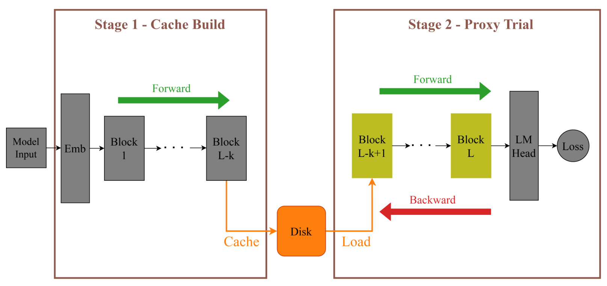
Figure 29 左框从输入、嵌入一直经过冻结前缀，绿色箭头只有前向，橙色箭头将边界结果写向磁盘。块内灰色色块到边界结束后，落盘文件才是后续每条代理分支的直接输入。右框的黄色部分是从边界接着执行的可训练块，红色箭头经过灰色语言头回到这些块，止于所缓存的边界。冻结输出头的灰色含义是权重固定，不能把红线穿过它的工作省掉。这个布局也解释磁盘特征要配上样本选择、分词及位置或掩码元数据。若每个候选的输入对齐错误，搜索看到的损失变化混有数据变化，代理最优点不能对应到任何一个完整训练。将缓存建立独立计时后，还能决定少量候选是否值得先付这笔固定成本。临时低显存机器可以构建和重复读取缓存，而最终更大的训练只需获得确定的学习率和可移植的配置。若缓存同时装入多种序列长度，在落盘抽取和代理重组时保留正确的有效长度，避免用填充 token 的变化伪造算量差异。图内的磁盘是无需保留所有候选优化器状态的代价，对较大的数据可以成为准备时间和空间瓶颈。固定前缀只处理一次使启动失败后的重试能够复用缓存，但这一箭头预设了冻结前缀的模型和数值配置不变。生产实现可以给磁盘片段加上冻结层参数指纹、数据清单和形状索引，先验证任一代理从原始输入和从落盘特征重放在同一精度下得到近似一致的末段输入。这个最小对照可以发现热身前缀随机性与样本次序变化，也能供后续性能比较沿同一批计时。
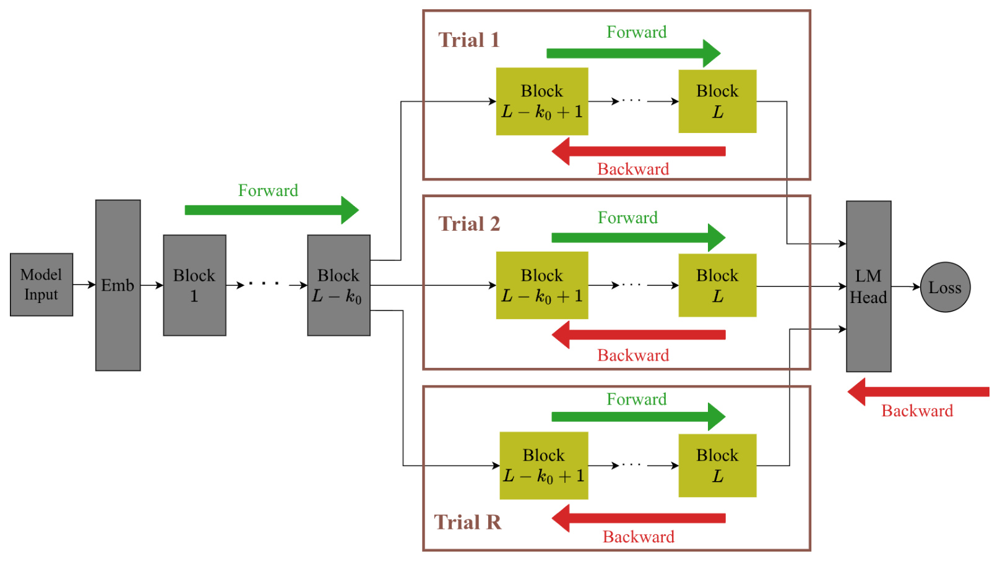
Figure 30 横向主轴有一次冻结前缀前向，达到分叉后，原图以多个黄块组展示每个学习率的一份可训练副本。它们读取各自的共享批特征，右侧输出头复用冻结权重，每条反向线只回到相应分支。图中的多条分支表示各候选在同一数据遍历中共同推进。实现没有让全部候选的激活同时驻留，作者实际依次对每个副本执行前向与反传，并保存全部副本的梯度、优化器矩和参数。该差别决定显存随候选数近似线性增长的来源，也解释为什么显存上限会迫使某些配置缩小扫参网格。若试验途中想替换一个学习率，其先前的历史优化轨迹并不等于邻近候选，单独重跑就可能损失共享计算优势。反之固定批序和分支独立状态便于比较多个学习率，没有必要为每个候选落盘一份完整数据特征。通向同一灰色 LM 头的多个箭头还说明参数存储共享和算子执行共享是不同问题。输出头虽冻结，输入取决于各分支独立末态，所以 logits 与损失按分支各自计算。在使用大词表、词头执行较贵的模型上，这部分重复进入每个代理的成本分母，代理即使压到一块也留下费用底线。候选并行的实际受益还依赖累计梯度何时写回。一个副本跨多个微批时仍需保留自己的累积状态，全部副本的峰值可由每候选可训练参数和矩精度预估。多个候选在同一步推进，也不使优化器状态互通。若分支在同一设备上发生异常，应能明确哪个候选退出而其他分支仍可沿原批顺序前进，避免更新共同输入导致结果失配。
符号解释： $R$ 是搜索候选数，$L$ 是全部块数，$k_0$ 是代理末端训练块数，$\gamma$ 是语言头单次成本相对单块前向的倍率，$\rho$ 是全深度搜索相对代理方案的理论 FLOPs 比。分母含一次前缀缓存、$R$ 次 cached proxy 和一次最终全深度训练。分子由全深度方法的每个候选组成，最好的现成模型可直接使用。将矩阵乘加折为两个 FLOPs，单块反向近似两倍前向，冻结语言头的前向和输入反向各一次。真实设备的非矩阵操作、优化器更新、激活检查点重算、缓存读取等成本不在这个式子内。随着 $R$ 增长，固定次数开销被摊薄，最终接近全深度与 cached proxy 单次成本的比，模型头开销会限制可得上界。若前缀并不复用，每次代理的每 token 算量变成 $(L+2k_0+2\gamma)c_{\rm fwd,blk}$，全深度与该代理的比始终小于三。
2.3 舍入下的一阶损失解释
作者把优化器提供的方向和权重实际移动分开。取目标选择的训练块集合 $A_k$，对某层在已有检查点下计算梯度与候选更新。FP32 在论文的分析近似里视同恒等写回，直接 BF16 经过目标存储格式的舍入。对已经存储好的参数，先做一次合法的候选更新，再由结果倒推实际方向。
符号解释： $\theta_l$ 为块 $l$ 的原参数，$u_l$ 为 Adam 给出的更新方向，$\eta$ 为候选学习率，$Q$ 为有效的写回舍入算子，$\theta_l^+$ 为更新后参数，$\widetilde u_l$ 为通过实际存储差分还原的更新方向。$A_k$ 是参与更新的 $k$ 个块。单元素的原值本来已在存储网格上，校验 $Q(\theta_l)=\theta_l$；写回与原位相同就得到零真实更新。文章斜率所需的是损失敏感方向的合成量，因此接下来用梯度的内积为度量，而不是只数更新非零的元素。
符号解释： $\mathcal L$ 为当前损失，$\nabla_{\theta_l}$ 为对该块参数求梯度，$D_k$ 把各块的名义一阶贡献相加，$\widetilde D_k$ 使用写回后的实际方向，两者之比 $\phi_k$ 在 $D_k>0$ 时为有效因子。$\Delta\mathcal L_k$ 是更新后损失减去原损失，负数代表下降，$O(\eta^2)$ 表示一阶建模未保留的高阶变化。若某些方向与梯度逆向，内积可以相互抵消。因而此比例描述一次具体选步与当前梯度的机械关系，不是任何样本上都位于零到一的可解释概率。若名义贡献很小或数值符号反常，要看原始量或改选适用区间，不能靠单个比值下结论。
直接 BF16 在 round-to-nearest 且离半格边界有典型间距时，较小步长会在更多坐标写回原值。用单步近似记开启向下、向上移动的局部门槛，可写出下式。
符号解释： $i$ 为块内权重坐标，$\mathrm{ULP}_{\rm dir}$ 指沿更新方向到邻近可表示数的局部间距，$p_k$ 为写回后确有移动的坐标比例，$c$ 是局部依赖权重与梯度分布的比例常数。第一项是忽略中点 ties 处理的阈值直觉，第二项只描述论文观测的未饱和区。若非零坐标每项的平均一阶贡献与名义平均贡献处于同一量级，论文进一步得到 $\phi_k$ 同阶随学习率增长。接近饱和时，新增活跃坐标越来越少。格式下溢、梯度裁剪行为变化或少数强贡献块也会破坏局部比例。
符号解释： $\eta_k$ 是某深度的最佳学习率，$\Theta(1)$ 表示步损失下降在不同深度同阶，$D_k$ 随块数线性增长预设每块贡献有可比量级，$\alpha$ 描述学习率所在区间里有效因子对步长的斜率。在一阶近似覆盖的范围，FP32 对应 $\alpha=0$，最近值 BF16 且活跃更新趋近线性时对应 $\alpha=1$。随机舍入按距离概率选择相邻可表示值，在固定方向下使真实增量期望与理想相同，在附录实测中斜率也回到近似逆块数。深度改变后达到同阶局部下降是理论假设，跨随机梯度步、不同任务或不同模型的最终成绩仍由实验给出。
3. 实验结果
3.1 一阶近似与更新因子
作者先将缩放解释的三项条件落到 SFT 探针。每个深度训练各自的模型，在候选深度的训练状态上测得梯度、优化器更新方向和写回结果。按论文的 FP32 覆盖范围，计算主动块名义贡献时可直接使用未舍入方向；低精度因子另用相同状态做候选写回。训练轨迹与快照探针分别测不同问题。
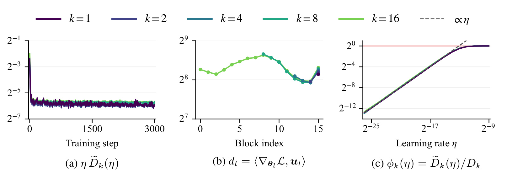
Figure 2 的左图按训练步对比几种深度的已实现一阶损失下降。纵轴以二的幂表示，曲线早期陡降后在相当量级波动，说明按预定学习率收缩后，所测训练的典型单步作用没有因块数增加而整体放大。这里使用的学习率本来就是随深度逆比的设定，所以可视作理论条件与训练状态相容的检验，不能用曲线自身独立识别最优指数。中图横轴是块在模型的索引，不同颜色只覆盖各自被训练的那段。重叠块的曲线接近，跨度也在约数倍范围内，但中间较高、靠近输出的若干块较弱，因而“同阶”保留常数差别。右图在第三千步对 BF16 写回作幅度探针，几种深度的直线段基本重叠，随后在接近一处变平。它用 FP32 训练轨迹上的状态做低精度假设性量化，因此没有测多步 BF16 动力学，还须和图三的直接 BF16 扫参一起读。左图证据限制在已访问的状态，右图用横轴扫的学习率也和左图实际训练率不同。观察三幅图共同支持的是有条件的解释：合理缩放下下降同阶，块贡献近似可加，向更低有效精度写回还会把一部分更新截掉。图中线性段不能延伸到饱和或接近下溢的全部区域。这里用于算每步损失下降的探针输入要跟实际批次同口径，因为若在另一个批次取梯度，再用当前批更新方向计算内积，结果还会带上采样失配。附录给出更广的局部误差检查，但一阶下降相近本身仍不保证最后见到相同质量。梯度裁剪后方向的范数、优化器历史、更新后重新前向估到的损失可形成三组配对观测，限制对此面板的因果解释。
3.2 跨模型的学习率扫参
主体实验包含 Llama-3.2-1B 的 Tülu 3 SFT、DeepSeek-Coder-6.7B 的 Magicoder-OSS-Instruct SFT、Llama-3.2-1B-Instruct 的 UltraFeedback DPO，以及 OLMo-2-1124-7B-SFT 在官方偏好混合上的 DPO。默认最长序列为 1024，AdamW、权重衰减为零、梯度全局范数裁剪一。部分采用常数学习率，部分采用线性热身和余弦退火。每套使用的网格和种子以各自协议为准。
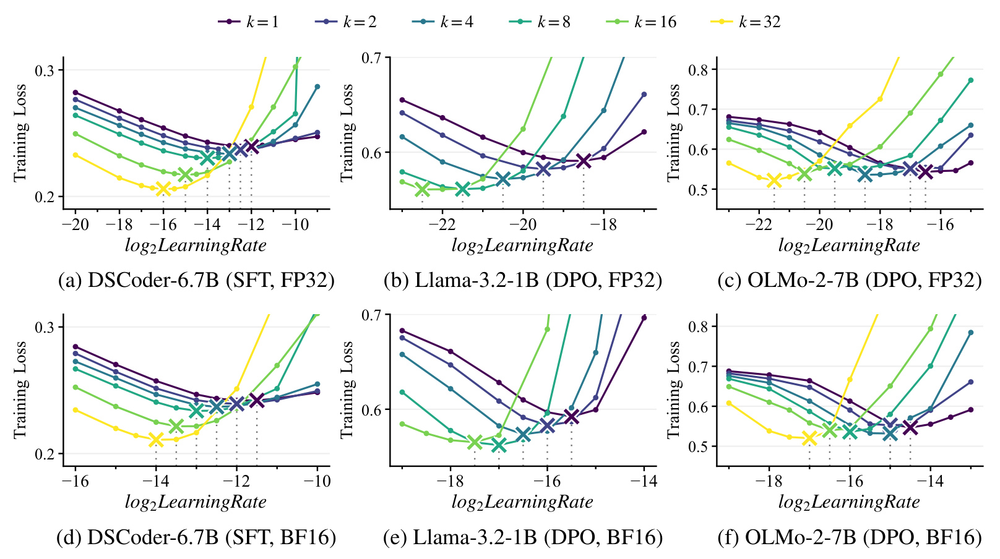
Figure 3 上下各三幅，同一列从 FP32 主权重切到直接 BF16，三列分别读代码 SFT、小尺寸偏好优化与较大规模偏好优化。横轴为学习率以二为底的对数，纵轴为训练末尾经指数滑动平均平滑的损失。每条曲线为独立的训练深度，交叉标记和竖向点线只给出这个候选网格上的最低点。黄色的全深度多在较左的位置，浅块的深蓝和紫色则常在右侧较平坦的区域。结构规模和训练目标不同，绝对学习率跨列并不直接可比。跨同一列读上下分面时，区别明显的是 BF16 最优率普遍偏高，而且随块数的左移慢一些。在过大学习率端，深度较大的若干曲线升得更陡，说明将代理的步长原样用于全深度会落入高损失区。曲线没有给出统计置信区间，而且纵轴截断范围随任务变化，不能按视觉坡度比较两种模型的绝对风险。更深入的证据来自右端高损失与谷底宽度同时变化。在浅层 FP32 的部分设置中，谷底两侧多个离散点几乎相同，任换一个种子可能使标记跳到邻点。先用网格区间解释差别，再用深度回归总结趋势，能避免给候选间无实质差的最优点过高权重。附录还按验证指标重选最优点，提供独立口径的支持，本文仍以图示的训练末态定义解释幂率。在 DPO 面板里还应固定同一个参考模型及训练对列表。被拒绝答案与被选答案的长度和 log 概率归约影响偏好学习的梯度，不宜用另一套长度权重把两条曲线直接配成精度效应。运行发布记录中可把每个标记绑定到实际训练配置，注明哪条曲线由最优点以外的多个值形成平台。
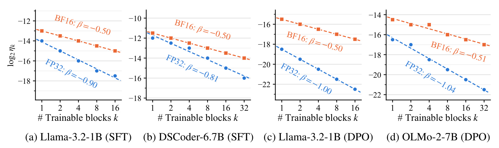
Figure 4 把一条曲线上最低网格点压成一个样本。蓝圈表示 FP32 主权重，橙方为直接 BF16。横轴是训练的块数，纵轴是最优率的二进制对数，最小二乘拟合在双对数坐标上读取指数。按图中四组任务，FP32 斜率为 −0.90、−0.81、−1.00 和 −1.04，直接 BF16 为 −0.50、−0.50、−0.50 和 −0.51。差异的方向在四组中一致，近似程度受网格离散和曲线平坦度影响。Llama-3.2-1B 系列层数十六，图中第二组与第四组较大模型可画到三十二，少数端点参与拟合时，个别谷底相邻学习率的噪声更容易带动回归线。因此数值 −1 和 −0.5 应看作在当前精度和目标设置下的迁移斜率，不能从图里推导任意深度的连续精确最优值。工程上可在目标深度的推定点两侧各布一个近邻候选，先统一启动点和预算，再看先验趋势能否重复。若所有候选只有很小差距，选更稳定的学习率比按斜率小数第二位外推更符合证据。附录保留所有候选及验证端结果，以便判断最小值附近点是否真正可区分。
在更严格的精度对照里，作者仍把最终权重更新写入 BF16，仅将梯度和优化器状态提高到 FP32。图二十五中直接 BF16 路线依旧接近逆平方根。这把结果进一步定位到参数写回层，并不等于任何 optimizer 的逐元素行为都受相同常数控制。随机舍入的图二十六显示去除期望丢失以后更贴近逆深度。两项都处在所测模型与阶段内，恰好支持“实际写回”的概念，也表明只读训练框架的 BF16 布尔参数不足以判定迁移公式。
3.3 精度、适配器与层位边界
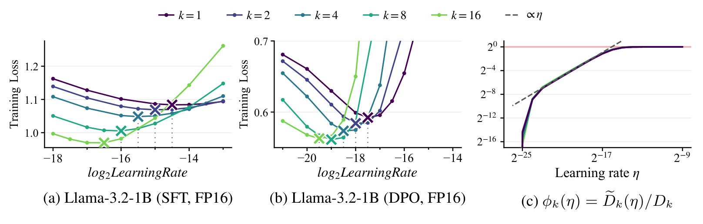
Figure 5 左、中的两张曲线分别是 Tülu 3 SFT 和 UltraFeedback DPO，纵轴仍为训练损失，图例区分被训练块数。跟着每条颜色的交叉标记看，直接 FP16 也在作者主要测试范围内接近逆平方根斜率。右图给出机制的有效区间。该面板的横轴是探针学习率，纵轴是实现的有效因子，图中虚线为线性参考。和图二 BF16 相比，饱和大约发生在八分之一的步长处，与 FP16 多三位尾数的分辨率量级相容。若继续把步长压到图左端，因子受动态范围变窄和下溢而额外骤降。最高的浅层 SFT 最优值已靠近线性区和饱和区的交界，不能从中推得所有 FP16 更新都保留同一个指数。另一个可复现的区别是作者为避免优化器状态在 FP16 下溢而把它们留在 FP32，因此条件明确指权重本身直接 FP16 写回。若将它和全套 FP16 状态的运行现象并在一起，可能把矩下溢导致的训练失败归因到权重缩放。图形本身出自同一 SFT 状态的步长探针，不表示梯度缩放、极小权重分布或不同 checkpoint 都能给出相同门槛。
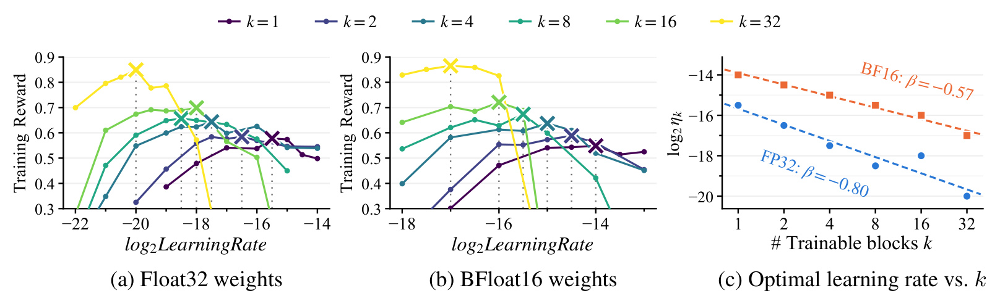
Figure 6 左和中图的横轴是学习率对数，纵轴是平滑后的训练奖励，和 SFT 或 DPO 的损失图不同，找的是峰值。右图将不同深度的最佳点在双对数坐标中拟合。底座为三十二块 Llama-3.1-8B，GRPO 使用 token 级 DAPO 损失、正确性和格式奖励，在一百步内每步采样一百二十八个题目、每题十六条轨迹。拟合 FP32 为 −0.80，直接 BF16 为 −0.57，方向吻合理论的两条经验线，和精确的 −1、−0.5 尚有距离。几组 FP32 曲线有较宽的平台，其中块数十六的网格最高点位置很容易变动。两种精度在各自最佳学习率下能到相近的奖励峰值，若强行绑定为同一个学习率，比较会混入其中一支的配方失配。这里的采样轨迹和奖励由当时的策略决定，图六只验证深度迁移趋势，作者没有用图九、图十的固定特征缓存来计算该 on-policy 实验的实际壁钟收益。GSM8K 验证结果在附录另图，训练奖励也包含格式项，不能直接当作答题正确率。若换成长链路工具调用，轨迹长度和采样方差更大，应复估奖励域内的最优点宽度和代理深度对 rollout 的影响。
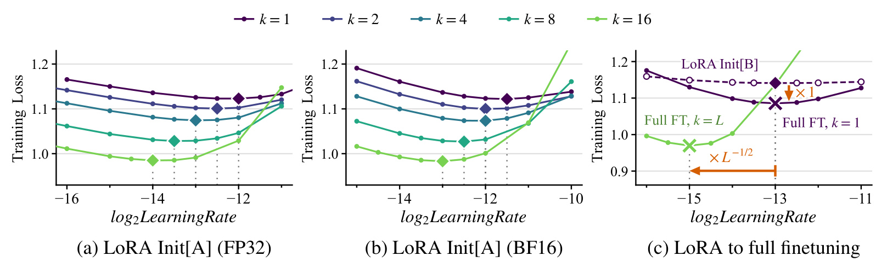
Figure 7 左和中图都以随机 A、零 B 作为 Init[A]，在不同深度训练低秩乘积；相对于直接修改预训练参数，这条链的优化器状态作用于两个低秩因子，所以相同的参数类型不保证同样的可加块贡献。FP32 适配器曲线的最优点接近逆平方根变化，BF16 适配器大体类似或更慢。右图的虚线来自反向的 Init[B]，即随机 B、零 A，只在末块训练适配器。按图示，该曲线最低点能重合在一块直接 BF16 训练的最优学习率附近，随后用全深度的平方根规则将它挪向目标深度。右图同时有“同块数从 LoRA 到直接微调”和“增加可训练块数”两步，前者只被一个初始化和所测任务支持。叉、菱形与箭头只是两种网格和迁移位置的展示，不意味着适配器接管了全深度更新。若目标变化是同时扩大 rank、层数或可训练子模块，应该分别复验初始化尺度、低秩乘积和深度的相互影响。当前图解释了一条可能降低代理显存的途径，同时给了不能把全参数规律直接套 LoRA 的实证反例。
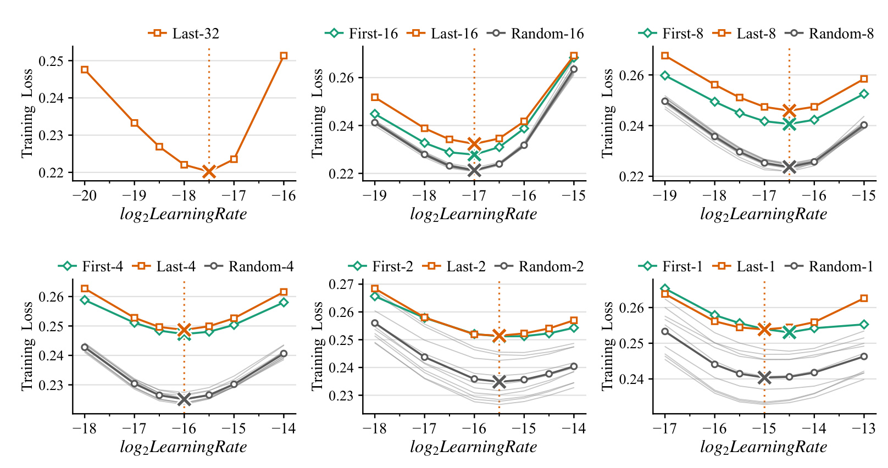
Figure 8 使用直接 BF16 的 Mistral-7B-v0.1，在相同的代码指令数据上比较从前取块、从后取块和随机分散。每个小面板固定一个块数，横轴同为学习率，面板组分别从全部三十二块过渡到只动一块。彩色线描出首尾策略，灰色曲线表示该深度的不同随机子集及聚合。固定块数时，最优点多在同一量级；谷底的损失却可有显著距离，部分随机子集曲线在相同学习率更低。训练深度的选点规则因此可先给相同量级的起点，后续还得独立选择把预算用在哪里。位置改变前缀仍可计算宽幅模型，却可能使冻结可复用区缩短。首块训练时，反传必须穿过后续冻结块到达输入块，和末端搜索有完全不同的计算、内存与激活生命周期。图中的相近最优率不能解释为任意散布块同样易缓存。灰色细线还提醒不同随机子集的最低点及幅度并非一致。若遍历子集再取最低最优点，实际多支付了模型结构选择预算，要与固定末端代理区分。论文使用每个非全深度十个子集的设计，复现可以保留这些子集及其确定规则，而不要只尝试恰好好用的一个位置。
3.4 搜索原型成本与结果质量
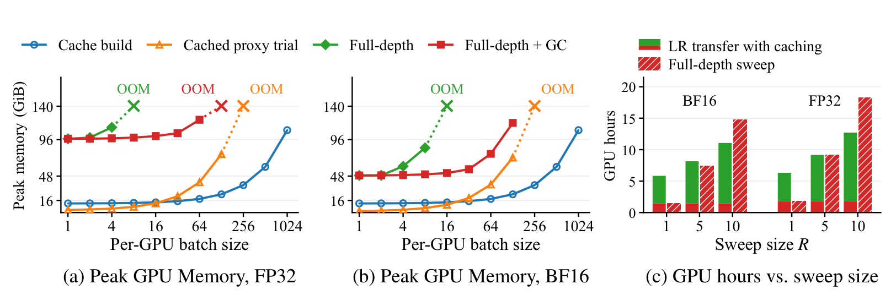
Figure 9 左、中图横轴是每 GPU 批量，纵轴为峰值已分配显存。作者用每条恰好一千零二十四 token 的最坏情况批测试。蓝线的缓存构建不持有梯度与一二阶矩，橙线的单末块代理只为很少参数保存它们。绿色是未使用梯度检查点的全深度运行，红色是加入检查点的全深度运行。小批量下全深度的固定存储负担很明显，批越大共同前向和末块激活越占主导，橙线就可能增长较快。图上叉号代表 OOM，说明越过该形状没有实际测到可行点。应沿相同图例横向读同批条件，同时分清将激活检查点作为节省显存的额外计算。右侧柱图以扫参数量为横轴，缓存路线左柱用颜色分解消费卡与 H200，斜纹全深度路线则都在高容量卡完成。五个候选时总 GPU 小时接近全深度搜索，约八成时长挪到较低容量的消费卡。这个总时间接近的事实和少用高端卡可以同时成立，不能根据图的节约表述推断五候选时端到端一定更快。实际测试在单张 RTX 5060 Ti 可用约 15.45 GiB 下执行，缓存构建约 3.78 小时。BF16 代理每候选约 0.58 小时、FP32 约 0.71 小时，完整特征缓存约 336.8 GiB。该显存实验只支持代理搜索能在消费卡完成，最终全深度训练另由 H200 承担。真实批的长度不齐，最大可行批又增加填充，所以显存曲线不可直接换算训练各阶段运行时。两个价值量分别是降低高端卡占用和节省总流程壁钟，实际采购或排队场景可能偏重前者。可用约十五点四五 GiB 是分配可见口径，商品标称显存和实际训练短时峰值各有不同。
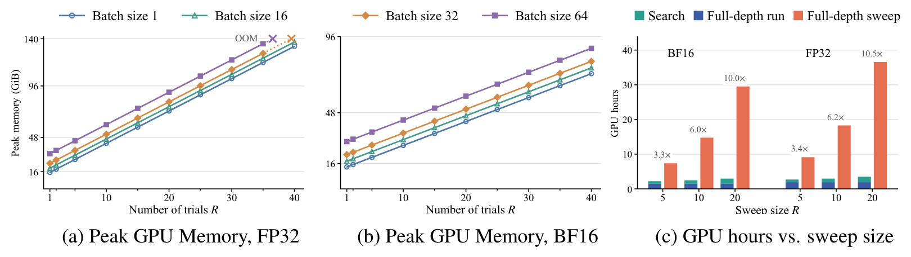
Figure 10 左、中图按 FP32 和 BF16 分开，横轴扫候选数，颜色为每 GPU 批量，纵轴看峰值。线性随候选增多主要来自每份末块副本的四份张量，即权重、梯度、AdamW 一阶矩与二阶矩。代理激活在一个分支结束后释放，所以增量斜率在各批量近似一致，起始高度则因批量不同而变化。每添一个候选约增 BF16 1.51 GiB 或 FP32 3.02 GiB。在这一形态中，选候选深度每增加一块会使副本更大，复用冻结前缀不能阻止候选越多时显存触顶。右图按 GPU 小时拆分：浅代理搜索和一次最终训练组成总代价，橙色为全深度扫参。附录表十七中，五候选 BF16 搜索 0.73 小时、最终全深度 1.48，两段合计 2.21，对照 7.38，约 3.34 倍；FP32 搜索 0.76、最终 1.93，两段合计 2.69，对照 9.14，约 3.40 倍。到二十个候选时，节约倍数为 9.97 和 10.45。全深度 FP32 参照使用两张 H200 和 ZeRO-3，代理加最终运行是一张 H200，两组比较的是 GPU 小时，壁钟倍数可能不同。如果只提“五个候选约半次最终训练”就是 0.73/1.48 或 0.76/1.93 的搜索部分，不能把该比例直接套到整套训练。这张图还把候选数量允许增长的条件露出来：现有硬件显存是否能容下副本决定算量摊薄的范围，达到上限后可能需要分批，重新付出冻结前缀的运行成本。从运维角度，图内每候选的增量可用于先留出设备高峰余量，再按目标并行形态选择网格大小。模型词表、可训练块宽度与优化器是否保存主权重都会改变单位候选承诺。同一设备上不可只观察每步平均耗时，因为进入最终深度训练后，激活和梯度路径已不同。比较单遍和落盘方案时还要按同一批形状与相同模型质量切点停表，避免用加载时间少的一端冒充整轮成本更小。
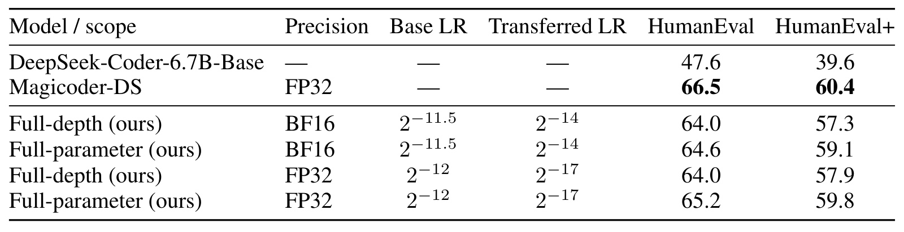
Table 1 每行给出模型范围、权重精度、代理率与全深度率，再列 HumanEval、HumanEval+ 的 pass@1。基座为 47.6% 和 39.6%。在只更新三十二个 Transformer 块时，直接 BF16 从代理 $2^{-11.5}$ 到目标 $2^{-14}$，FP32 从 $2^{-12}$ 到 $2^{-17}$，HumanEval 都是 64.0%，严格测试 HumanEval+ 分别 57.3%、57.9%。加上嵌入与语言头仍用同一相应学习率，两个数据集成为 BF16 的 64.6%、59.1%，和 FP32 的 65.2%、59.8%。这个比例差可解释相近质量依赖先给不同写回条件各自调学习率。外部已发布 Magicoder-DS 报告 66.5%、60.4%，分别仍高于表内对照。作者使用一轮 AdamW、有效批三十二，而外部结果是两轮 Adafactor、批五百一十二，训练时长、optimizer 和 batch 的变化无法由这两列拆解。大幅超过未训练基座说明当前选择能够完成有效训练，但仍需要同配方全深度扫参才能估计迁移后的最优点损失。各百分点落在一百六十四题的离散评估上，低于一个百分点的变化通常是约一题，勿将单种子小差距解释为精度类型更优。附录额外两个种子上，BF16 代理选点保持一致。FP32 有一个种子掉到相邻格点，实际支持报告一个目标学习率附近的合理区间。全参数范围还是一次附加验证，因为映射只建立在块数上，嵌入和语言头的步长如何独立变化未从这组表推得。模型质量判断最终仍要观察创建这些检查点所用的相同更新精度，而非将代码任务结果外推到偏好排序或强化学习。更细的质量判读应对每一题保留两精度各自的输出和运行测试结果。即便两条路线都报告六成以上，通过题目也可能仅部分重叠。相同模型尺寸、转移学习率看似接近，无法回答任务覆盖或补充测试难度的差异。因而更好的研究设计还可报告配对转移和低于最优网格的容忍值。
4. 总结
TipSweep 最值得复用的是两种可独立实施的设计。其一是在原检查点上保持计算图和冻结边界，以可训练块数压缩学习率网格的单次候选成本。其二是观察优化器写回后的实际更新，按所处的存储精度、舍入区间以及块贡献定标目标深度。若只实现第二部分，仍能用少量目标深度的选择获得起点。若只实现前缀共享，也能减少同一个固定任务上的候选冗余计算。但两者共同受到代理对应关系的约束，需要将先扫代理再从原检查点启动目标模型列作可验证的滚动步骤。训练能力还取决于最终允许动哪些参数，专业任务中的目标尺度和质量证据应独立入账。
对复现最先应处理的是探针的观测点。固定本来已加载的权重、同批有效 token、梯度裁剪、优化器矩和学习率调度，再对不同写回路径记录主副本与前向副本。除了块和坐标更新的非零率，还要计算名义与实际方向同梯度的内积。有的参数虽然非零比例低，主要损失贡献仍可能集中在参与更新的少数参数，单独一个非零率不足以判断是否近似二次关系。跨多个训练阶段读相同的更新统计，以解释下溢、线性近似的中段与饱和区间的区别。若稳定性来自局部条件，这类信息比继承一个已发布学习率数值更容易在新深度中诊断边界。
四个尚未回答的问题决定可迁移程度。首先，目标学习率取当前训练曲线网格最低值，真正验证指标可能在另一个近邻。平坦谷底、训练长度与随机种子会影响回归指数。第二，设计依赖可比块贡献和同阶稳定下降。层位、参数异质、长训练阶段及任意稀疏参数更新可能让两项前提变化。第三，BF16 直接写回只是最近值舍入在线性区域的近似，FP16 的极端小步下溢、零点附近权重和随机舍入都需要分别量化。第四，两种缓存工程均从固定数据和确定性前缀获益。真实动态采样、数据版本切换、缓存 IO、热门候选并行竞争及设备适配，均会影响端到端结果。额外地，梯度累积精度、异构分布式实现和更深的高端底座未被这几组实验全面覆盖，不能把消费卡上的一次代理配置当成更大模型的一般界限。
后续可先用三条路径评估这套假设。选一个现有任务固定数据与模型初始状态，让 FP32 主副本、直接 BF16 和随机舍入分别跑浅代理，并在映射前后各保留至少一对相邻的目标学习率。记录同等验证集、步数和模型质量，这能识别映射是否缩小了目标搜索空间。再用不同层位及 LoRA 初始化做小对照，将目标深度和可训练参数类型的影响分开；对于更新大底座的系统，特别要核对迁移在跨模块时是否仍好于同预算人工经验。最后逐设备计时缓存构建、IO、每候选训练、最终目标运行和等待，把有效数据覆盖、重新预处理成本及并行候选形态保留在预算表。这样可以定量回答搜索是节省总资源、降低高端卡占用，还是用较大缓存空间兑换其中一项。评估真正成果时，同时保留代码、训练损失或偏好任务各自的基线与训练方案，避免将代理搜索便利推成未被验证的最终模型绝对优势。